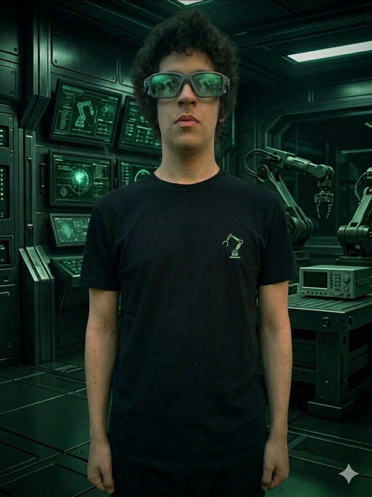

AI products
Generative AI services, retrieval workflows, and practical agent experiences shaped for real users and production-ready teams.
Applied AI Engineer · Robotics Developer · ML / Software Engineer based in Mar del Plata, Argentina. My work spans generative AI, evaluation, RAG, cloud systems, computer vision, robotics, and developer tooling.

Engineering stance
Useful · Testable · Grounded in real deployment
I focus on systems that are useful, testable, and grounded in the realities of real-world deployment.
I’m a software developer with a strong bias toward practical execution. My work connects generative AI, robotics, and developer experience — from cloud-based AI prototypes to embedded control ideas and agentic tooling built for real engineering workflows.
Most of my public work focuses on reusable product patterns: Anthropic ecosystem starter kits, AWS-based AI experiences, and experimental interfaces for computer vision, robotics, and control systems designed to support real execution.
The goal is simple: move from “I built an AI project” to “I built it, evaluated it, benchmarked it, analyzed the results, and used those results to improve the system.”
I work at the intersection of intelligent systems, robotics prototyping, and the tooling that helps advanced workflows move from experimentation to dependable implementation.
Generative AI services, retrieval workflows, and practical agent experiences shaped for real users and production-ready teams.
Embedded control ideas, sensor-driven experiments, and computer vision concepts that connect software to physical systems with purpose.
Structured workflows for modern engineering teams, including APIs, MCP patterns, automation, and intelligent infrastructure that ships cleanly.
No fabricated metrics. If a result hasn’t been measured, it shouldn’t be presented as measured.
Quality · reliability · safety · latency · tokens · cost
Role: Measurement layer for LLM applications — standardized reports that feed engineering decisions.
How projects connect into a measurable workflow
Principle: Clear separation between measured results and illustrative demos.
Projects where technical depth, practical implementation, and credible evidence converge — evaluation systems, cloud AI, robotics perception, and developer tooling.
A hands-on starter for learning and exploring the fundamentals of deep learning with TensorFlow & Keras on structured data — fully executed notebooks with outputs ready on GitHub.
Why this matters: Turns course concepts into reproducible experiments with clear evaluation of overfitting, regularization, and classification metrics.
Practical AI engineering lab for evaluating AI systems, benchmarking RAG architectures, and experimenting with AI-assisted software development.
Why this matters: Connects AI projects through a measurable workflow for building, evaluating, benchmarking, and improving systems — with clear separation between measured and illustrative results.
Advanced Model Context Protocol server demonstrating sampling, elicitation, roots, pagination, structured output, Streamable HTTP, resumability, and OAuth 2.1 + PKCE.
Why this matters: Provides a production-oriented foundation for richer agent workflows and safer tool integration patterns.
Real-time browser-based computer vision dashboard with COCO-SSD object detection, lightweight tracking, performance metrics, and simulated robot telemetry.
Why this matters: Shows a perception pipeline rather than an isolated model demo: video input flows through browser inference, tracking, telemetry, and a live dashboard.
AI-powered Mercado Libre product and advertising optimizer for data-driven performance analysis, profitability insights, and campaign decisions.
Why this matters: Surfaces profitability issues and ranks products with actionable scale, optimize, or pause recommendations based on real seller metrics.
A practical Python starter kit for Claude API patterns such as prompts, conversation state, streaming, tool use, and agent loops.
Why this matters: Accelerates real engineering workflows with reusable patterns for production-style Claude integrations.
Interactive or exploratory work that demonstrates the pipeline from perception to decision.
Browser-based perception pipeline: live video → object detection → centroid tracking → telemetry visualization. Designed to feel closer to a robot control interface than a model demo.
Open labHub that ties experiment outputs, evaluation reports, and engineering decisions together. Emphasizes reproducible benchmarks and honest reporting of what was actually measured.
Open labLanguages, frameworks, and platforms I use to build, evaluate, and ship systems.
Open to roles and collaborations in applied AI, robotics software, evaluation systems, and developer tooling.
Email: lazarogvitolo@gmail.com